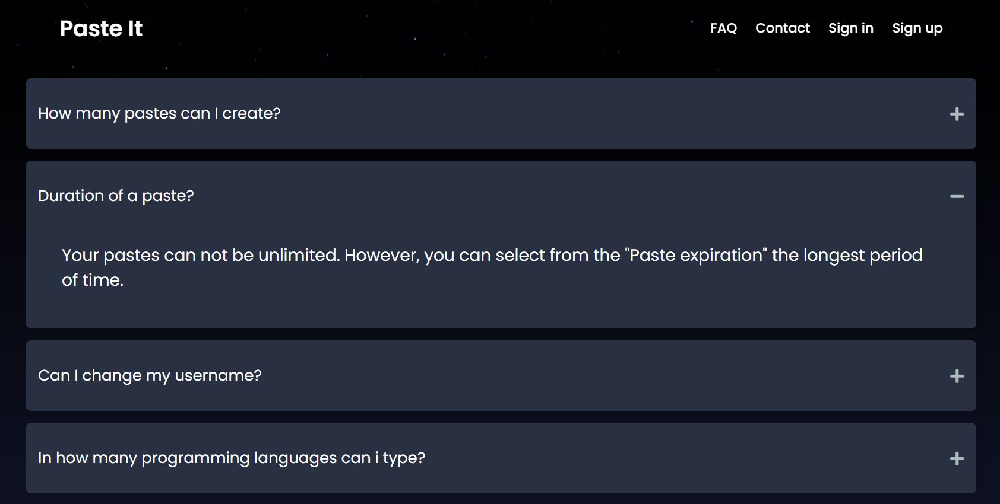
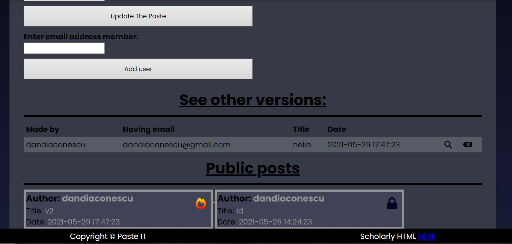

2. Introducere
Paste It este o aplicație Web prin intermediul căreia se poate distribui cod sursă (scris într-un anumit limbaj de programare). Aplicația oferă suport pentru mai multe limbaje de programare (SQL, HTML/XML, C/C++) și este în continuă dezvoltare. Pot posta atât utilizatorii autentificați, cât și cei care nu doresc să-și creeze un cont.
2.1 Scop
Paste It este ușor de utilizat, intuitiv și gratis. Aplicație vine în ajutorul celor care doresc să facă share codului scris într-o manieră rapidă și sigură. Iteracțiunea cu aplicația este simplă, trebuie doar să accesezi link-ul, să dai copy-paste la propriul cod sau să scrii direct unul dupa care obții link-ul pe care îl poți împărtăși cu oricine. De asemenea, se pot vizualiza și postări publice, iar utilizatorii care au cont își pot gestiona propriile postări.
2.2 Convenții
Aplicația este gândită pentru a fi ușor de utilizat. Un alt aspect important pe care aplicația îl urmărește este rapiditatea cu care clientul reușește să interacționeze cu aceasta. Astfel, pe pagina principală, utilizatorul poate posta printr-un singur click, întregul cod și poate crea un "New Paste" foarte rapid pe care mai apoi îl poată distribui prin intermediul link-ului. De asemenea, toate opțiunile care pot fi atribuite unei noi postări se regăsesc imediat sub codul incărcat de utilizator pentru ca o postare sa fie usor de configurat. în plus, gestionarea propriilor postări se poate face din contul utilizatorului în care acesta are acces la toate postările, iar pentru fiecare dintre ele are opțiunea de a o edita sau de a o șterge. La fel de ușor de găsit sunt și setările despre propriul cont făcut în aplicație: îți poți schimba username-ul, parola și chiar adresa de email din secțiunea "account" pentru utilizatorii logați.
2.3 Țelul produsului
Produsul are scopul de a furniza un mediu facil și plăcut, în care utilizatorul va putea să își distribuie codul sursă. Fiind utilizat strict pentru a susține un serviciu, acesta nu este încărcat de animații ce ar putea îngreuna browser-ul utilizatorului. Site-ul urmărește mai mult componenta funcțională decat cea a interfeței și urmărește să ofere utilizatorului o experiență cât mai directă cu funcționalitățile acesteia.
2.4 Referinţe
Pentru a crea un site cu o interfață cât mai accesibilă pentru utilizator, am documentat căteva site-uri utile a caror link se regăsește mai jos. În plus, site-ul dispune de secțiuni cu diagrame cu rol informativ, pentru a spori încrederea utilizatorului în această aplicație. De asemenea, site-ul folosește un provider de icon-uri bazat pe SVG-uri pentru a îmbogăți experiența utilizatorului cu aplicația.
3. Descriere generală
3.1 Perspectiva produsului
Produsul are scopul de a oferi o alternativă minimalistă de găzduire web. Făcând o comparație cu un alt astfel de provider (i.e. GitHub), Paste It devine o opțiune viabilă când vine vorba de proiecte de dimensiune mică sau când vrei să împărtășești rapid codul scris de către tine cu altcineva.
3.2 Funcționalitățile produsului
Site-ul dispune de multiple opțiuni care îți pot veni în ajutor atunci când dorești să încarci o nouă postare. În primul rând, ai opțiunea de a face postări publice sau private. Dacă nu ai cont nu vei putea avea acces la a crea postări private. De asemenea, opțiunile de siguranță introduse, parola pentru fiecare postare și "burn after read" cresc gradul de încredere pe care utilizatorul îl poate acorda site-ului întrucât postările pot fi făcute într-o manieră sigura, dacă se dorește acest lucru. Mai mult decât atât, poți selecta ce utilizatori îți pot vedea și edita postările și poti urmări câte persoane au vazut o anumită postare pe care o deții. În plus, poți face un rollback la versiuni anterioare ale codului în caz că s-a facut vreo modificare care a alterat în vreun fel postarea într-un mod nedorit.
3.3 Categorii de utilizatori
Aplicația este destinată, în principal, programatorilor ce vor să își imparta secvente de cod relativ scurte. Cu toate acestea, aceasta poate fi utilizata de către oricine doreste sa-si impartaseasca informatia, indiferent de categoria sociala din care face parte.
3.4 Mediu de operare
Fiind o aplicatie Web, Paste It este scalabilă in orice browser ce rulează HTML, CSS, JS, neținând cont de o versiune anume a sistemului de operare a device-ului pe care rulează aplicația.
3.5 Design și constrângeri de implementare
Paste It este o platformă online cu ajutorul căreia poți stoca orice text pentru a-l distribui ușor mai departe. Cu toate acestea, aplicația vine și cu căteva limitări. Astfel, este posibiă doar incărcarea de text pe pagina, fara a putea încărca un întreg fișier sau director care să conțină fișiere pe care să le poată distribui. Ideea principală a aplicației este doar de a facilita impărtășirea de text și nu de alt format. De asemenea și aici se intălnesc cateva limitări, intrucât postarea pe care un utilizator o creează trebuie sa nu depășească o anumită dimensiune, însă această dimensiune este destul de mare, ceea ce nu poate reprezenta o problemă pentru cel care creează postarea. Mai mult decât atât, pentru utilizatorii care au un cont, aceștia au o anumita limită în care își pot salva postările făcute, cele private și nu dispun de un spațiu nelimitat. În ceea ce privește design-ul, aplicația are o pagină de start în care sunt sumarizate cele mai importante aspecte ale aplicației de pe care utilizatorul poate trece ușor spre a-și crea prima sa postare. Sunt prezentate aspectele legate de constrângerile dintre un utilizator logat și unul nelogat. De asemenea, chart-urile introduse în ultima secțiunea prezintă traficul de pe aplicație și constau în a menține o evidență a ultilizatorilor și a postărilor noi de pe site făcute în ultima lună.


3.6 Documentație pentru utilizator
Secțiunea "FAQ" a site-ului este gânditată pentru a răspunde utilizatorului la cele mai frecvente întrebări pe care acesta le poate avea în ceeea ce privește interacțiunea cu aplicația. Întrebările din secțiune sunt selectate dintre intrebările frecvente ale utilizatorilor, iar modalitatea lor de afișare oferă utilizatorului o navigare rapidă și o identificare exactă a soluțiilor la majoritatea problemelor sau neclarităților pe care le poate avea în ceea ce privește interacțiunea cu site-ul.
4. Interfață
4.1 Interfață utilizator
Pagina principala:

Secțiunea de FAQ:

Secțiunea de login:

Secțiunea de account:

Secțiunea de login:
Secțiunea de account:
5. Cerințe funcționale
5.1 Înregistrare
Utilizatorii care doresc opțiuni avansate și control asupra postărilor pe care urmează să le facă, vor fi nevoiți să se înregistreze și să se autentifice folosind credențialele lor unice. Datele oferite vor fi trimise catre server prin formularul de înregistrare, doar după ce au fost validate corespunzător. Utilizatorul care dorește să-și creeze un cont trebuie mai întâi să acceseze pagina de "Sign UP" și să completeze formularul corespunzator cu datele potrivite (credențialele utilizatorului). De asemenea, formularul are mai multe constrângeri asociate și astfel fiecare câmp trebuie completat, nu există câmpuri opționale. De asemenea, numele utilizatorui trebuie să aibă o lungime minimă (8 caractere), email-ul introdus trebuie să fie valid și să nu existe un alt utilizator cu același email înregistrat deja în baza de date , iar parola trebuie să fie de o lungime minimă (8 caractere). În plus, validarea parolei se face prin reintroducerea acesteia. Orice greșeală de completare din partea utilizatorului este însoțită cu mesaje de eroare sugestive care ghidează pașii spre rezolvarea problemelor. De asemenea, dacă s-a apasat "submit", dar sunt date greșite, se vor șterge doar acestea și vor rămâne cele care sunt introduse corect. Un cont realizat cu succes va fi însoțit de un mesaj sugestiv și de o redirectare a user-ului spre pagina de home, fără însă a loga utilizatorul, acesta va trebui ulterior să introducă datele contului realizat pentru a se loga.
5.2 Autentificare
Utilizatorii care dețin un cont se pot autentifica pe pagina de login în care trebuie să-și introducă adresa de email și parola. Datele introduse de către utilizator vor fi validate. În cazul în care logarea a avut succes, utilizatorul va fi redirectat către pagina de home în care acesta va putea să își creeze noua lui postare. Toate mesajele de eroare sau de nerespectarea unor constrângeri în ceea ce privește completarea formularului vor fi sugestiv oferite utilizatorului pentru a corecta eventualele greșeli.
5.3 Încărcarea codului - crearea unei postări
Aceasta este funcționalitatea de bază a aplicației fără de care specificul acesteia nu ar exista. Orice utilizator (autentificat sau nu) are dreptul de a crea postări. Postările se creează de pe pagina de home a aplicației apăsând butonul de "Create New Paste". Chiar dacă toți utilizatorii pot crea o postare, este însă o limitare în ceea ce privește funcționalitățile la care are acces un utilizator care are un cont, față de un utilizator nelogat. Așadar, opțiunile care sunt disponibile în funcție de categoria de user sunt afișate imediat sub postarea creată. Dupa ce se completează câmpul cu datele unei postări (de exemplu un cod sursă), utilizatorul poate trece mai apoi pentru a selecta diverse opțiuni.
5.4 Gestionarea postărilor : editare și ștergere
Gestionarea postarilor se poate face prin intermediul a doua pagini: pagina de home in care utilizatorul poate vedea postarile sale recente, dar si din pagina de "account". Diferenta dintre cele doua moduri de gestionare si vizualizare a postarilor este faptul ca in pagina in care este contul utilizatorului acesta poate vedea si postari la care nu este direct detinator sau creator, insa la care a fost invitat spre a fi colobarator si astfel, pentru aceste postari se va afisa cine este creatorul de drept al paste-ului. Pagina de home, in schimb, va afisa doar paste-urile utilizatorului , fara cele la care este implicat de catre alti useri. Așadar, din propriul cont, utilizatorul își poate gestiona postările: poate modifica conținutul lor și le poate șterge, făcând click pe unul din cele două butoane asociate în partea dreaptă a fiecărei postări.
5.5 Gestionarea postărilor : adăugarea de membri
În cazul utilizatorilor care au un cont există posibilitatea de a adăuga membri care să modifice postarea și să lucreze împreună la un post. Acest lucru se poate realiza dând click pe o postare anume unde se va găsi , imediat sub postare, câmpul cu formular pentru adăugarea unui membru. Utilizatorul trebuie să introducă email-ul corect al unui utilizator cu cont, dupa care poate vedea toți colaboratorii de la o anumită postare apăsând pe butonul din partea de sus a unei postări: "See other members". Se vor valida datele introduse de utilizator : acesta nu se poate adăuga pe sine și nici nu poate adăuga un utilizator de mai multe ori sau un utilizator care nu există în baza de date.
5.6 Gestionarea postărilor : rollback la versiuni anterioare
Pentru toate postările pe care le face un utilizator acesta poate alege să editeze anumite postări și pentru fiecare editare pe care o va face va trebui să menționeze un titlu sugestiv, similar cu un commit în github ,iar pentru postarea respectivă se va crea o nouă versiune care va fi catalogată drept versiunea principală a postării, iar versiunea veche va putea fi vizualizată imediat sub postare într-o secțiune denumită "See other versions" care are menirea de a arăta user-ul toate versiunile și modificările aduse acelei postări. În cazul în care se dorește trecerea la o versiune anterioară, acest lucru este ușor de făcut întrucât utilizator care va vizualiza o versiune a unei postări și nu o versiune principală, va fi notificat de acest lucru printr-un warning :"This is an older version..", iar dacă se dorește postarea respectivă poate deveni din nou principală, iar postarea ințială devine acum o versiune.
5.7 Protejarea postării prin parolă
Pentru utilizatorii care au un cont, există opțiunea de a proteja postarea facută prin intermediul unei parole introduse de către aceștia. Astfel, pentru cei care vor dori să acceseze postarea va fi necesară introducerea acestei parole pentru a putea mai departe să vizualizeze textul introdus de către utilizator. Așadar, această opțiune restricționeaza accesul la postări și oferă încredere pentru a utiliza aplicația în continuare. De asemenea, postarile care au parolă pot fi facute si publice, însă vor avea asociat un icon sugestiv prin care se va întelege că acel post este protejat.
5.8 Burn after read
Opțiunea de "Burn after read" apare în momentul în care dorești să creezi o nouă postare. Bifând această opțiune, respectivul paste mai poate fi văzut o singură dată de un străin, urmâd ca aceasta să fie ștears. Paste-urile publice cu opțiunea de burn after read vor avea un semn distinctiv. De asemenea, creatorului postarii va putea sa vada de oricâte ori dorește postarea respectivă, fară ca aceasta sa devină indisponibilă, însă daca un străin vede această postare atunci ea nu mai poate fi vazută a doua oară de către nimeni.
5.9 Selectarea sintaxei
Codurile postate de către utilizatori vor fi colorate conform unei sintaxe selectate de către aceștia (sintax highlighter) pentru a putea fi citite ușor de către oricine are acces la postarea respectivă. Aplicația este într-o continuă dezvoltare și se pot adăuga mai multe sintaxe pe care site-ul să le recunoască. Momentan aplicația poate colora textul scris de către utilizatori conform următoarelor limbaje : XML, SQL, C++.
5.10 Probleme tip CAPTCHA
Rezolvarea de către utilizator a problemelor de tip CAPTCHA este necesară pentru a preveni tentativele de spam ce ar putea suprasolicita, respectiv îngreuna, acțiunile serverului. O astfel de problemă va apărea înainte de a face publică o nouă postare. Totodată, există un buton ce reseteaza problema respectivă cu una nouă în dacă se dorește acest lucru. Daca captcha introdus nu este corect, atunci se va afișa un mesaj de eroare sugestiv și utilizatorul va trebui să reintroducă corect datele, însă nu va trebui să rescrie iar postarea, acest lucru facându-se automat.
5.11 Postări publice/private
Postările pe care toți utilizatorii le pot crea sunt de două feluri: private sau publice. Pentru utilizatorii care nu au un cont se pot face doar postări private, care pot fi vizualizate de către oricine, neavând acces la diverse opțiuni de confidentialitate care se pot asocia unei postări. Cu un cont creat, poți avea acces la opțiunea de a crea postări private care pot fi văzute doar de către deținătorii linkului respectiv.